"온화한 날씨 속에서 다양한 농업과 인간 활동이 활발한 곳"
📊 지중해성 기후(Cs) 그래프
📊 서안 해양성 기후(Cfb) 그래프
📊 온대 계절풍 기후(Cfa) 그래프
🏡 지중해성 기후의 흰 벽 가옥 (산토리니)
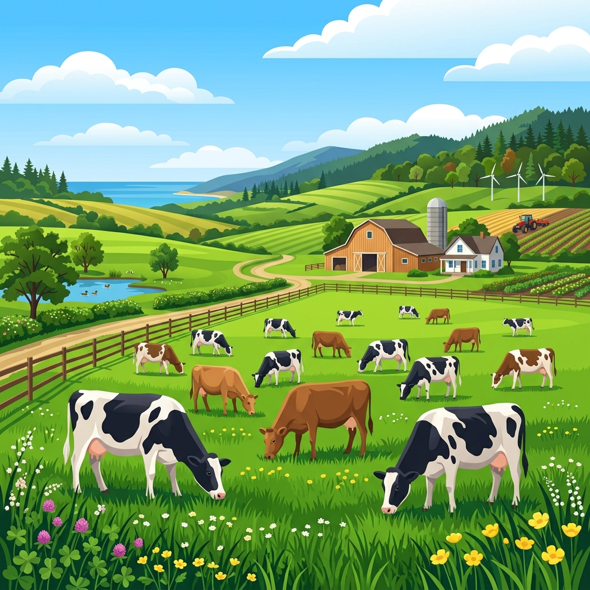
🐄 목초지에서 방목하는 혼합 농업
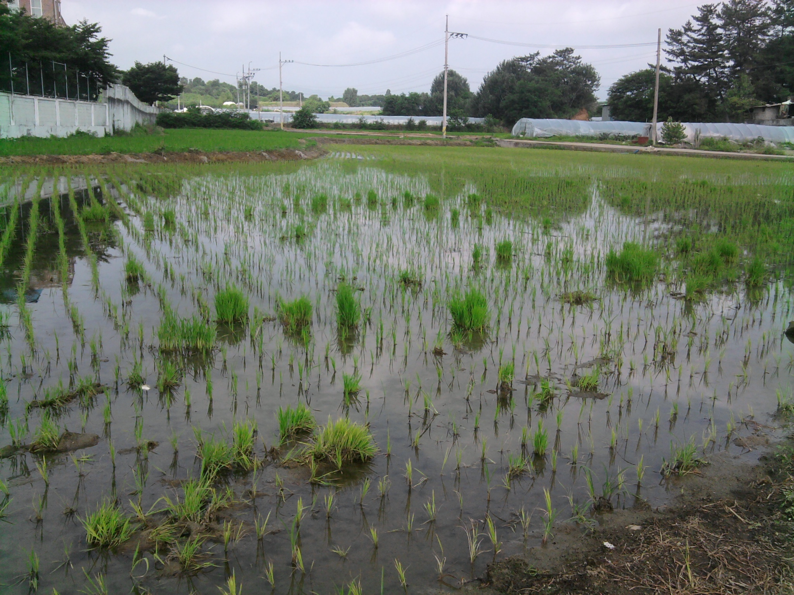
🌾 벼농사를 짓는 온대 계절풍 농업
📌 기후 특징
- 사계절 사계절 변화 뚜렷 ➡️ 계절별 다양한 생활 양식 발달
- 기온 및 강수 연중 온화, 적당한 강수량 ➡️ 인간 거주 최적, 인구 밀집 및 산업 발달
- 주요 지역 중위도 지역 (유럽 주요국, 동아시아, 미국 일부 등)
🏡 주민 생활 모습(의·식·주)
- 의(衣)생활 사계절 변화에 대응 ➡️ 얇은 옷부터 두꺼운 옷까지 다양하게 착용
-
식(食)생활
• 서안 해양성 기후: 혼합 농업 발달 (곡물 재배 + 가축 사육 병행)
• 지중해성 기후: 여름철 고온 건조 극복 ➡️ 수목 농업 발달 (올리브, 오렌지, 포도 등) - 주(住)생활 • 지중해성 기후: 여름철 강한 열기 차단 ➡️ 흰색 벽(햇빛 반사), 두꺼운 벽, 작은 창문
"길고 추운 겨울과 넓은 침엽수림(타이가)이 펼쳐진 곳"
📊 냉대 습윤 기후(Df) 그래프
📊 냉대 건조 기후(Dw) 그래프
🌌 오로라 아래 아늑한 통나무집
🌲 눈 덮인 울창한 타이가(침엽수림)
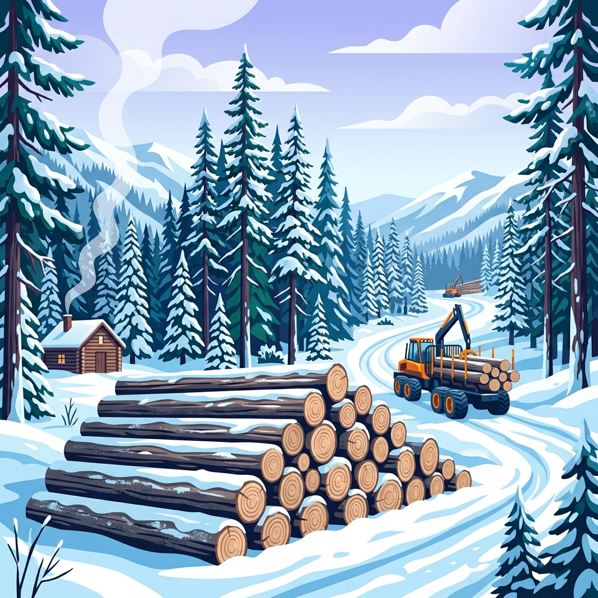
🪵 침엽수림을 활용한 임업 (목재 생산)
📌 기후 특징
- 기온 변화 길고 추운 겨울, 짧고 따뜻한 여름 ➡️ 연교차 매우 큼
- 식생 북반구 고위도 넓은 침엽수림 지대인 타이가 분포
- 주요 지역 시베리아, 캐나다, 스칸디나비아반도 등
🏡 주민 생활 모습(의·식·주)
- 의(衣)생활 혹한 극복 ➡️ 동물 가죽 및 털로 만든 두꺼운 방한복 착용
- 식(食)생활 농업 불리 ➡️ 풍부한 침엽수림 기반의 임업(목재·펄프 생산) 및 수렵 발달
-
주(住)생활
• 건축 재료: 침엽수림 자원을 쉽게 활용한 통나무집 건축
• 구조 특징: 폭설로 인한 지붕 붕괴 방지 ➡️ 가파른 경사 지붕 설계
"얼어붙은 땅과 빙하, 생존을 위한 독특한 지혜가 담긴 곳"
📊 툰드라 기후(ET) 그래프
📊 빙설 기후(EF) 그래프
🛖 침하를 막는 고상 가옥과 이글루
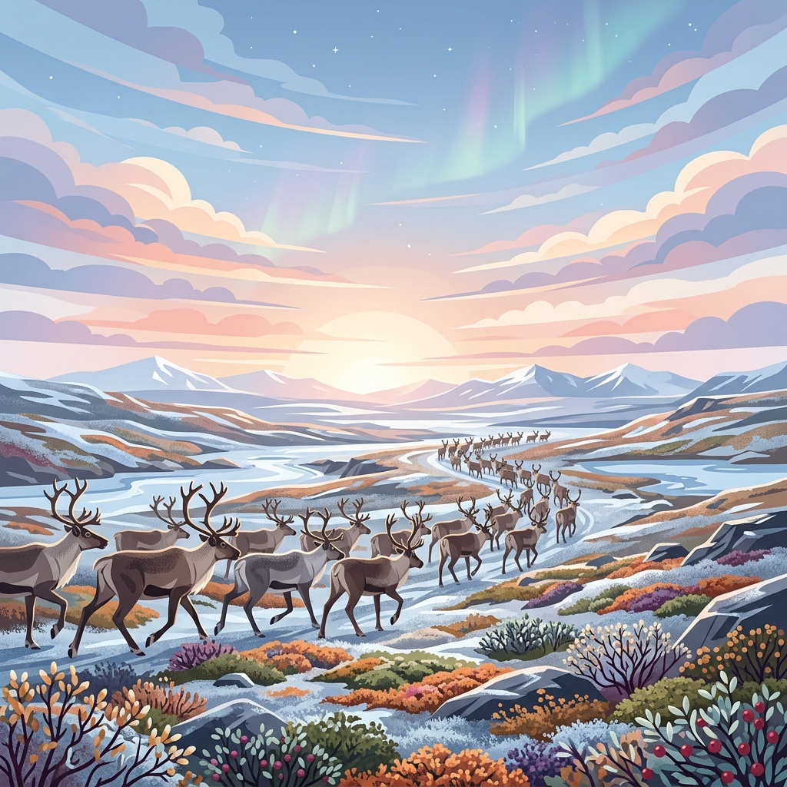
🦌 툰드라 지대의 순록 유목 풍경
🧊 빙하와 오로라가 펼쳐진 북극해
📌 기후 특징
- 극심한 추위 최난월 평균 기온 10℃ 미만 ➡️ 농작물 재배 절대 불가능
- 토양층 여름에 일시적으로 녹는 활동층 + 연중 얼어 있는 영구동토층 구성
- 주요 지역 북극해 연안, 그린란드, 남극 대륙 등
🏡 주민 생활 모습(의·식·주)
- 의(衣)생활 매서운 강풍 and 혹한 극복 ➡️ 털가죽 옷 여러 겹 겹쳐 입기
- 식(食)생활 농업 불가능 ➡️ 전통적인 순록 유목, 수렵(바다표범, 물고기 등) 및 육식 중심
-
주(住)생활
• 고상 가옥: 여름철 활동층 융해로 인한 지반 침하 및 건물 뒤틀림 방지 ➡️ 지지대를 영구동토층에 단단히 박고 집을 지면에서 띄워 지음
• 임시 거처: 사냥 이동 시 얼음 벽돌을 활용한 이글루 사용
"해발 고도가 높고 경사가 급하지만, 적응과 극복의 삶이 펼쳐지는 곳"
📊 열대 고산 기후(H - 키토) 그래프
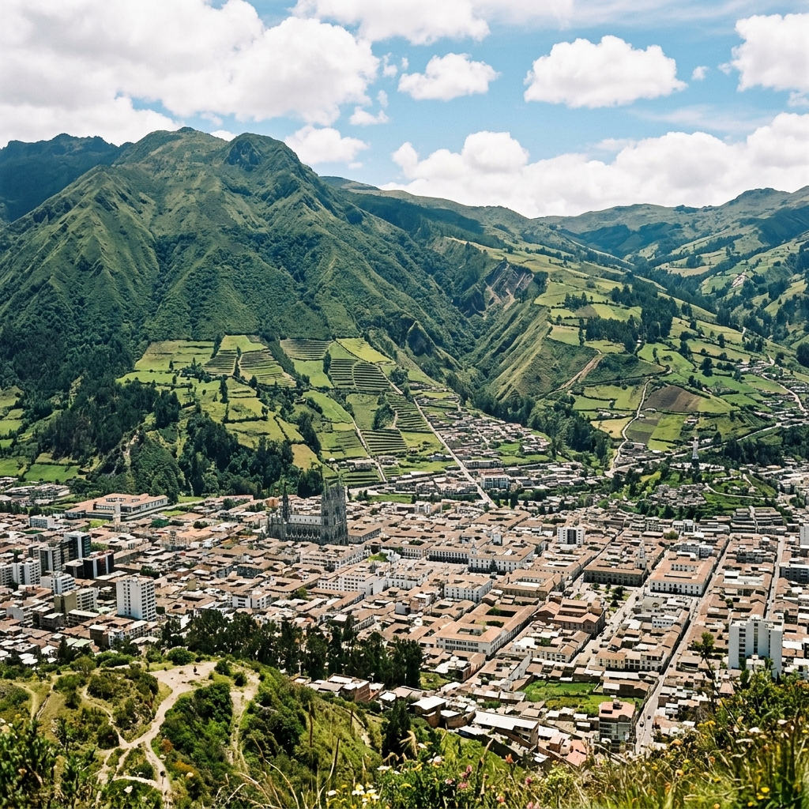
⛰️ 험준한 산지 지형 경관
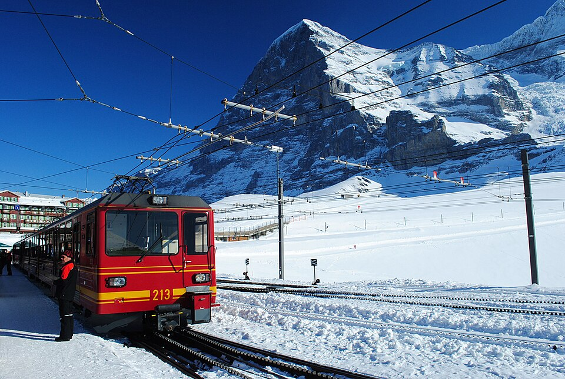
🚂 알프스 산악 관광 열차
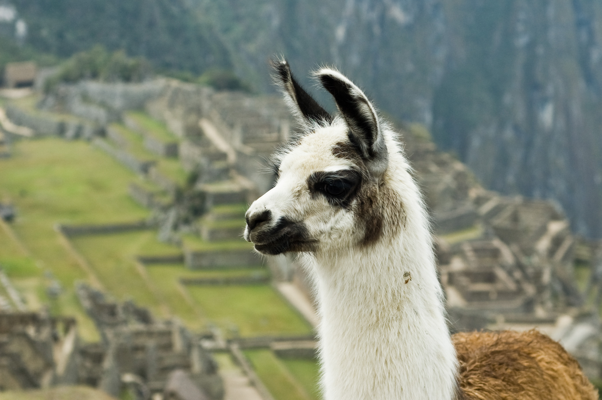
🏡 연중 온화한 열대 고산 도시 (키토)
📌 지형 특징
- 기복 및 경사 해발 고도가 높고, 경사가 급한 편 ➡️ 인간 거주와 교통에 불리함.
- 거주 환경 주민들은 비교적 경사가 완만한 산간 분지나 고원 등에 모여 거주함.
🏡 주민 생활 모습
- 농업 활동 평지가 부족하여 밭농사를 주로 지으며, 경사지를 개간하여 계단식 경작지를 조성함. 초지에서는 목축업이 발달함.
- 산업 및 경제 독특한 산지 경관을 활용한 관광 산업과 풍부한 지하자원을 개발하는 광공업 발달
- 열대 고산 지역 열대 지역의 고산 지대는 연중 날씨가 온화함 (상춘 기후) ➡️ 예로부터 고산 도시 발달 (예: 에콰도르의 키토)
"낮고 편평한 땅, 예로부터 인류 문명과 경제 활동의 중심지"
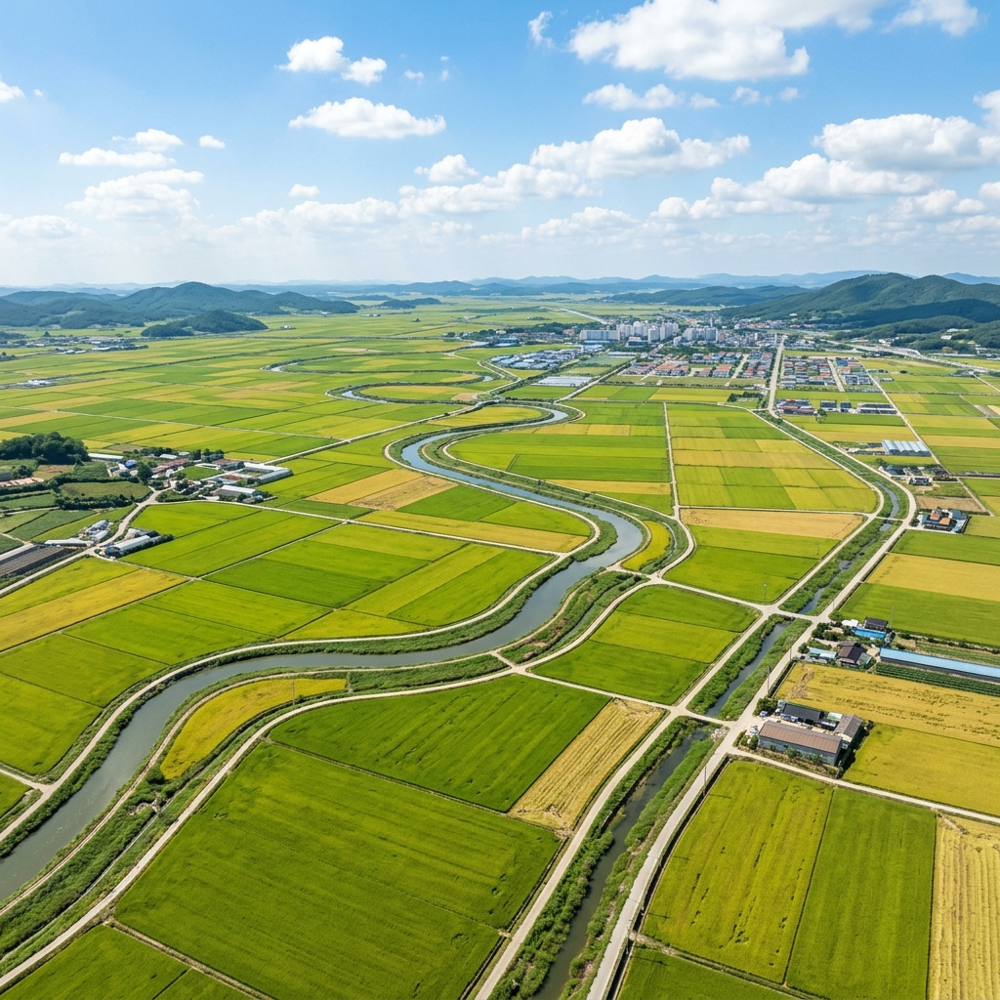
🌾 편평하게 발달한 넓은 평야 지형
🏢 평야 지대의 중심 도시와 밀집된 도로망
🌾 김제평야의 대규모 벼농사 수확 모습
📌 지형 특징
- 지표면 형태 해발 고도가 낮고, 지표면이 편평함 ➡️ 농경지 확보, 교통망 건설, 가옥 건축에 유리
- 입지 대개 큰 강(대하천) 주변에 발달하며, 비옥한 토양이 퇴적되어 형성됨.
🏡 주민 생활 모습
- 농업 활동 물을 구하기 쉽고 편평하여 벼농사와 같은 다양한 대규모 농경 활동이 활발함 (예: 곡창지대인 김제평야).
- 거주 및 도시 예로부터 강 하류 평야에 사람이 모여 살며 문명이 발상하고 도시가 발달함 (예: 미국의 세인트루이스).
- 교통 및 산업 도로, 철도 등 교통망을 닦기 쉬워 대규모 공업 단지와 상업 시설이 발달함.
"육지와 바다가 만나는 접점, 두 세계의 장점을 모두 누리는 삶의 터전"

🌊 해식애와 돌기둥(시 스택)이 어우러진 해안 경관
⚓ 선박들이 정박하기 좋은 항구와 포구

🍇 란사로테 섬의 반원형 돌담 바람막이와 포도 재배
📌 지형 특징
- 지리적 이점 육지 교통과 해상 교통이 연결되는 교통의 요지이자, 풍부한 수산 자원의 보고임.
🏡 주민 생활 모습
- 어업 및 양식업 바다에서 수산물을 잡는 어업과 갯벌 등을 활용해 전복, 김 등을 기르는 양식업이 활발함 (예: 우리나라 남해군 양식장).
- 항구와 공업 수출입이 편리하여 대규모 항구 및 해안 공업 단지가 발달함 (예: 중국의 상하이).
- 관광 산업 파도에 깎인 해식애나 돌기둥인 시 스택 등 수려한 경관을 즐기는 해양 관광 산업 발달.
- 란사로테 극복사례 화산섬 란사로테에서는 바람을 막기 위해 돌로 반원형 바람막이 벽을 쌓아 포도를 재배함.
"하천의 물길과 비옥한 주변 평야를 이용해 내륙 교통과 생활을 가꾸는 곳"
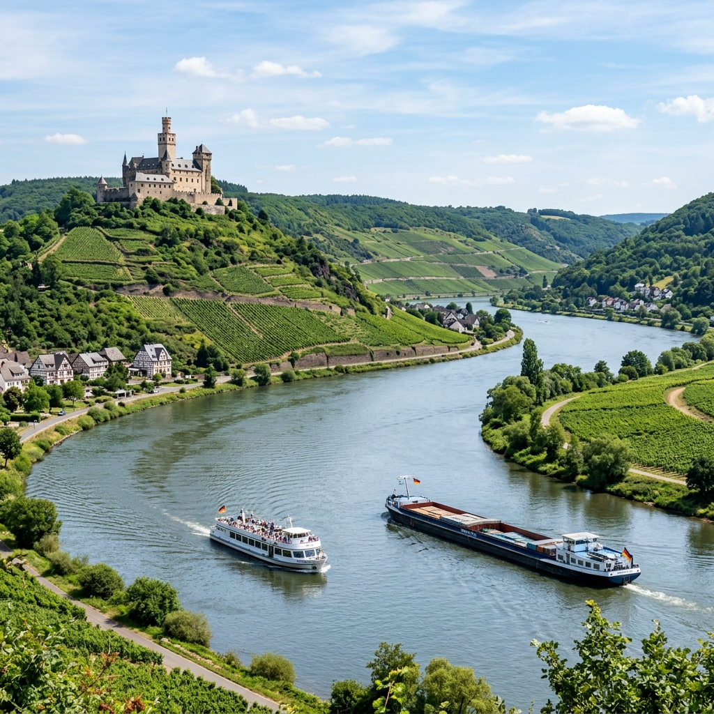
🏞️ 굽이쳐 흐르는 큰 하천(강)의 모습
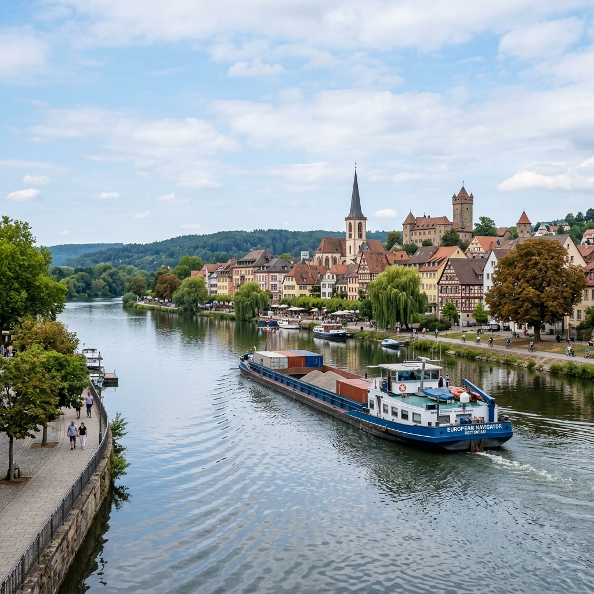
🚢 내륙 깊숙이 발달한 내륙 교통(수로)
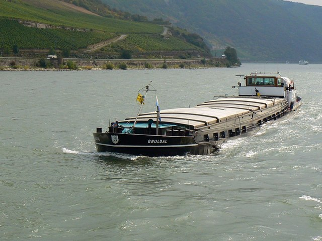
🚢 독일 라인강을 운항하는 대형 화물 바지선
📌 지형 특징
- 형성 과정 하천이 흐르며 깎고, 나르고, 쌓는 작용을 통해 비옥한 평야와 다양한 지형을 형성함.
🏡 주민 생활 모습
- 교통로 이용 독일의 라인강은 경사가 완만하고 수량 변화가 적어 물길을 이용한 교통로(수로)로 활발히 활용되어 내륙 수송의 중심지가 됨.
"물에 녹는 석회암이 빚어낸 독특한 경관과 밭농사 중심의 삶"
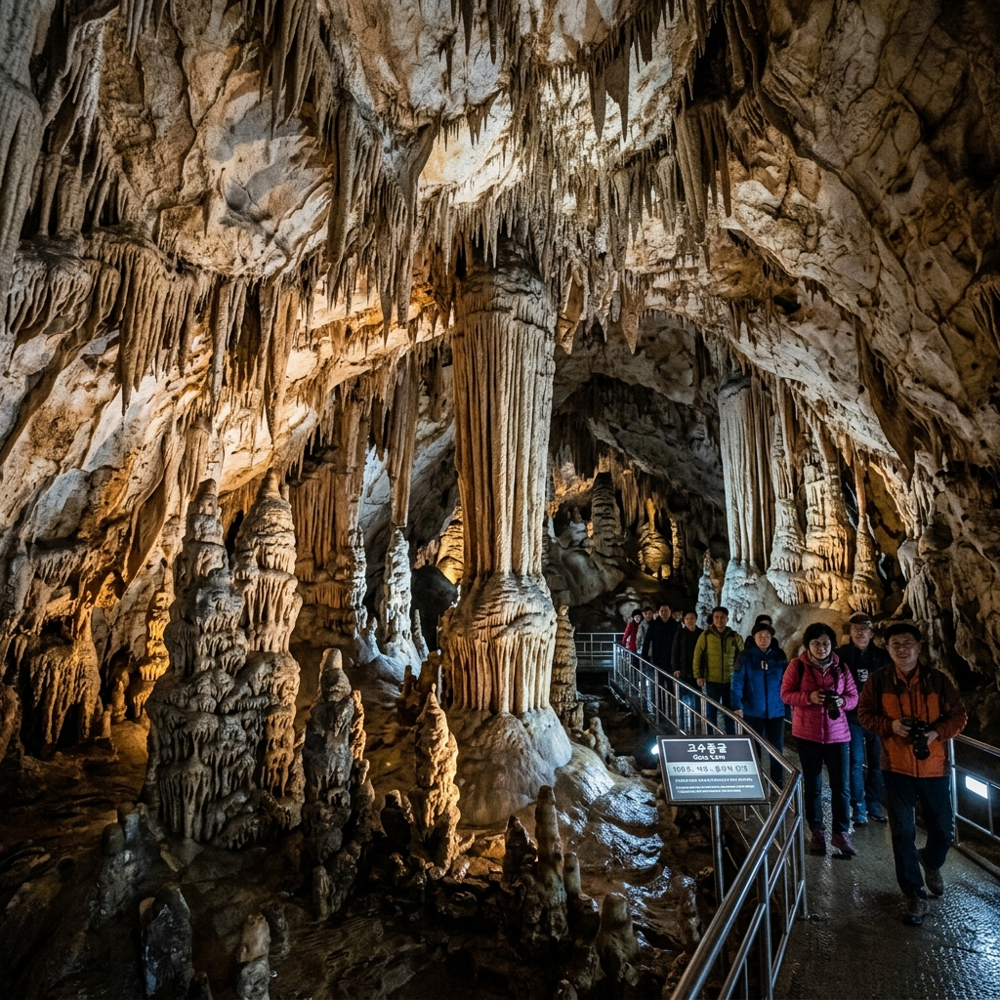
지하에 아름답게 발달한 석회 동굴 (고씨동굴)
🏭 시멘트 공장과 석회석 광산 개발

🕳️ 석회암 고원에 형성된 깔때기 모양의 웅덩이(돌리네)
📌 지형 특징
- 화학적 특징 물에 잘 녹는 성질을 가진 석회암이 빗물이나 지하수에 용해되는 용식 작용을 받아 형성됨.
- 주요 구조 지표의 접시 모양 웅덩이인 돌리네와 지하의 석회 동굴이 발달함. 동굴 내부에는 종유석, 석순, 석주 등이 성장함 (예: 삼척·영월의 고씨동굴).
🏡 주민 생활 모습
- 농업 및 산업 배수가 매우 빨라 논농사 대신 밭농사를 주로 지으며, 시멘트 핵심 원료인 석회암 광업 및 동굴 관광 발달.
"마그마의 분출이 빚어낸 경이로운 대지, 화산과 온천을 활용하는 곳"
🌋 마그마 분출로 형성된 분화구와 화산체 (다이아몬드 헤드)
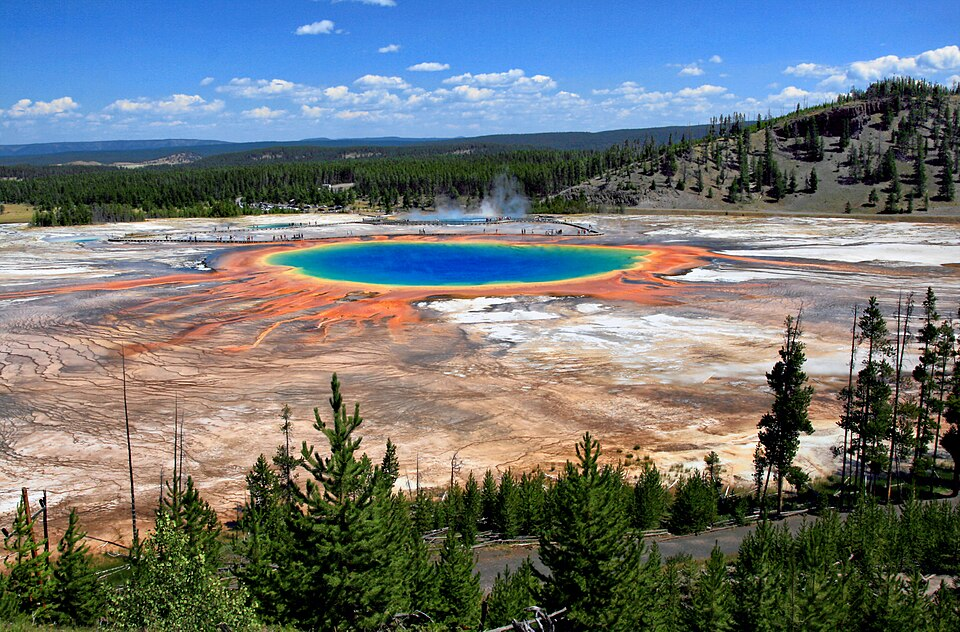
♨️ 분출구 주변에서 뿜어져 나오는 온천과 증기
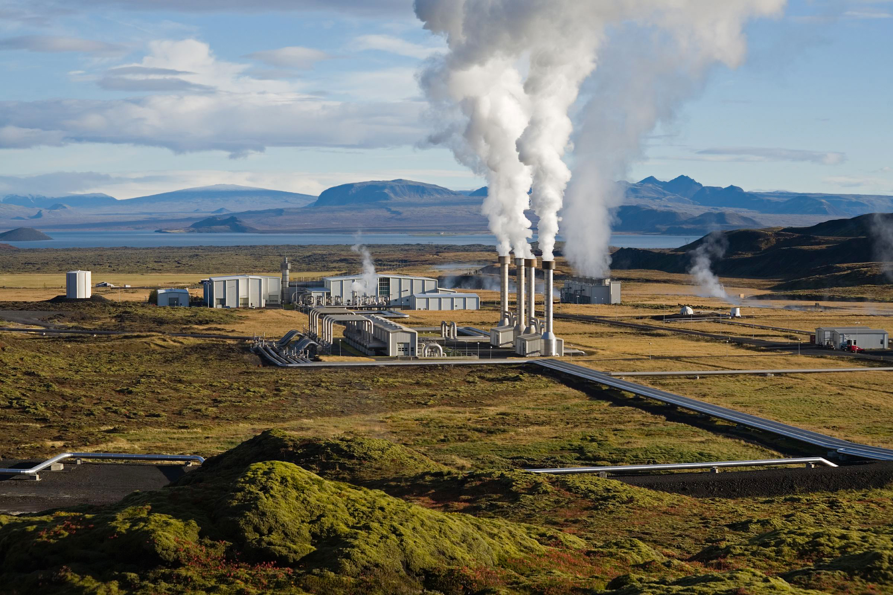
⚡ 땅속의 강한 열을 이용하는 지열 발전소
📌 지형 특징
- 형성 원인 지구 내부의 마그마나 용암이 지표 밖으로 분출하며 독특한 화산체를 형성함.
🏡 주민 생활 모습
- 주요 지역 및 명소 미국의 하와이섬이 유명하며, 화산 활동으로 생긴 화구구인 다이아몬드 헤드 등이 세계적인 명소임.
- 자원 활용 온천 관광이나 땅속의 열을 활용한 지열 발전으로 전력을 얻으며, 비옥한 화산재 토양을 기반으로 농사(차, 포도 등)를 짓기도 함.
"거대한 얼음 장벽 빙하가 깎아 만든 날카로운 산봉우리와 깊은 피오르"
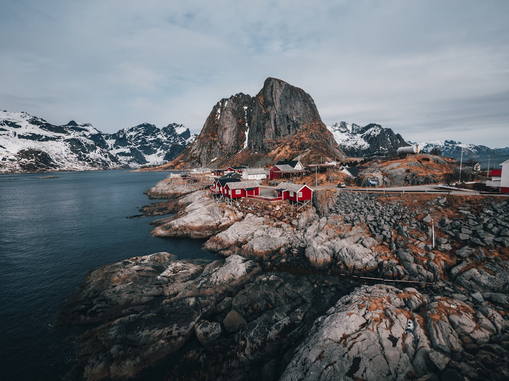
❄️ 산지를 뒤덮고 흐르는 거대한 빙하
🌊 해안선 깊숙이 바닷물이 들어찬 피오르 만
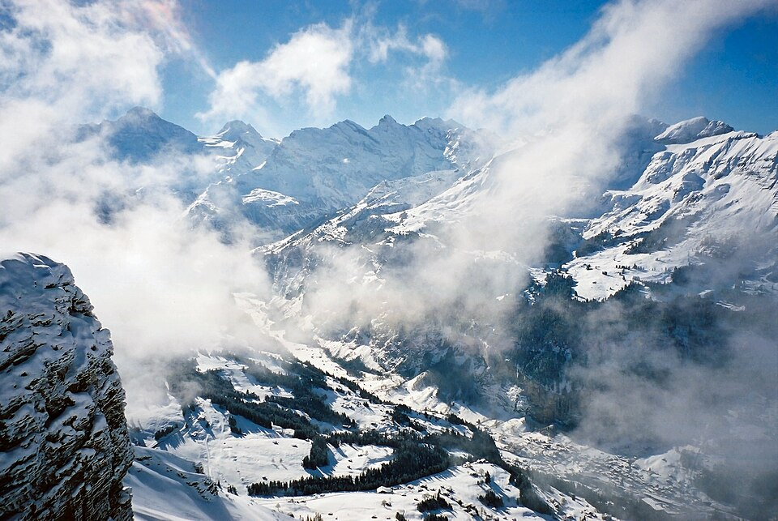
🏔️ 빙하 침식으로 만들어진 웅장한 U자형 골짜기 (라우터브루넨)
📌 지형 특징
- 침식 형태 빙하가 이동하며 지표를 깎아 만든 뾰족한 산봉우리와 침식 골짜기인 U자곡/빙식곡 형성.
- 피오르 해안 U자곡에 바닷물이 유입되어 형성된 좁고 깊은 만을 피오르라고 함 (예: 노르웨이 에이랑에르 피오르).
🏡 주민 생활 모습
- 산업 및 경제 웅장하고 수려한 경관을 구경하기 위해 수많은 관광객이 방문함.
- 항구 발달 수심이 매우 깊고 파도가 잔잔하여 대형 선박이 드나들기 좋은 천혜의 항구가 발달함.